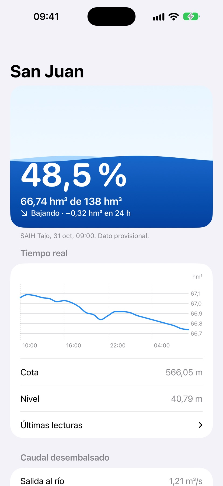
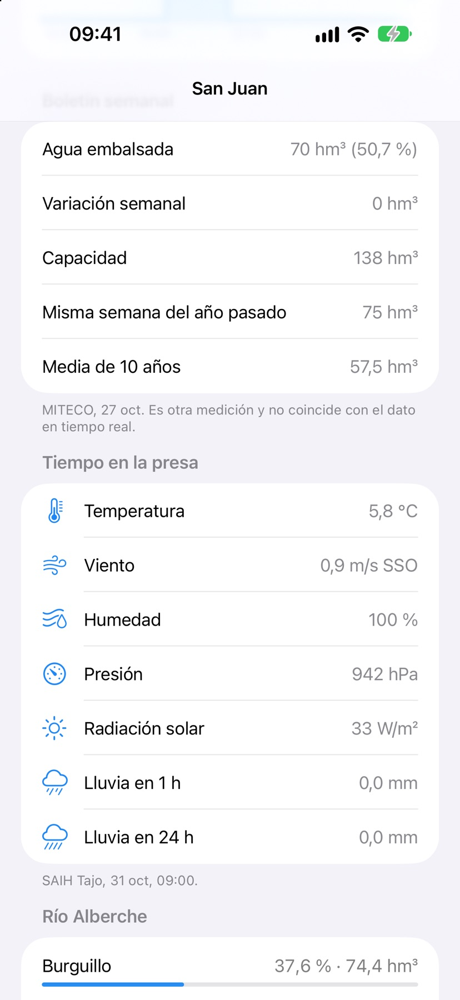
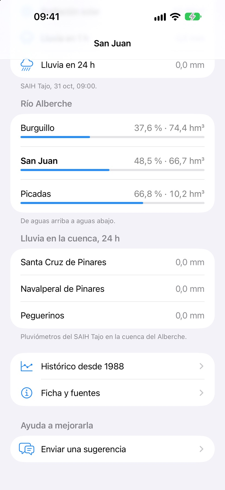
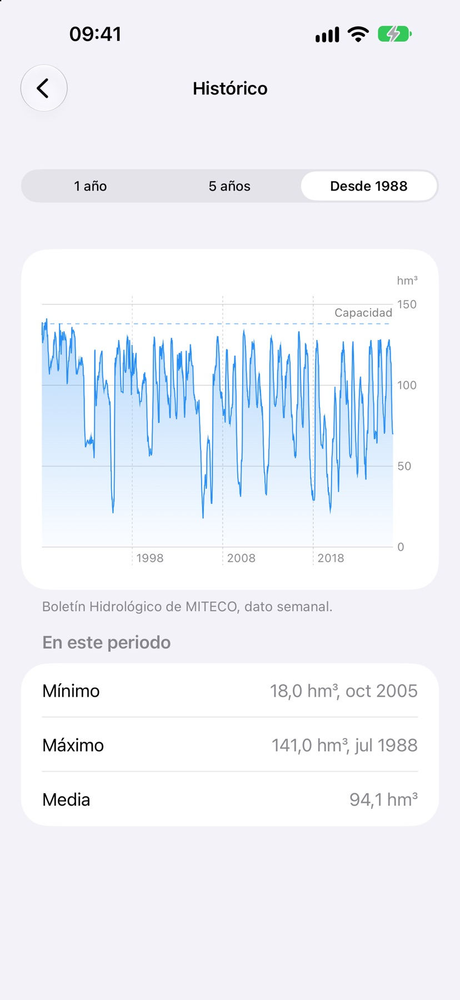
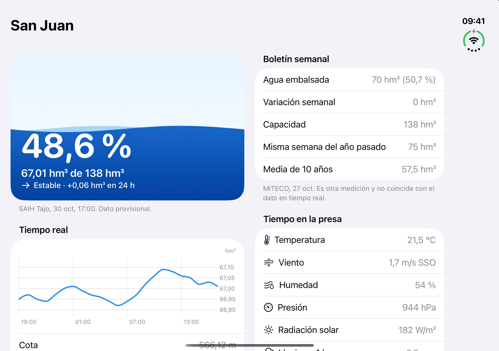
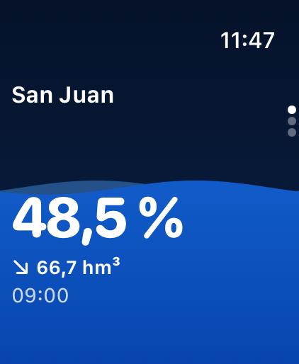
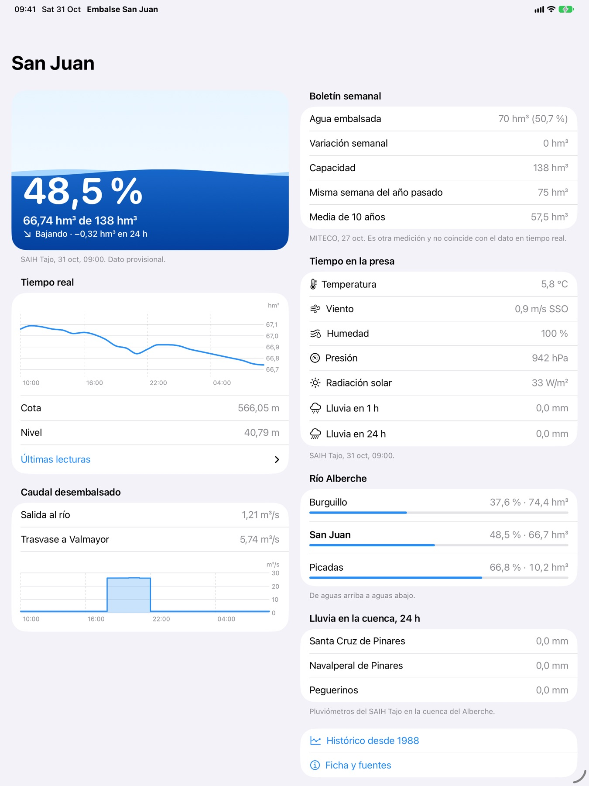
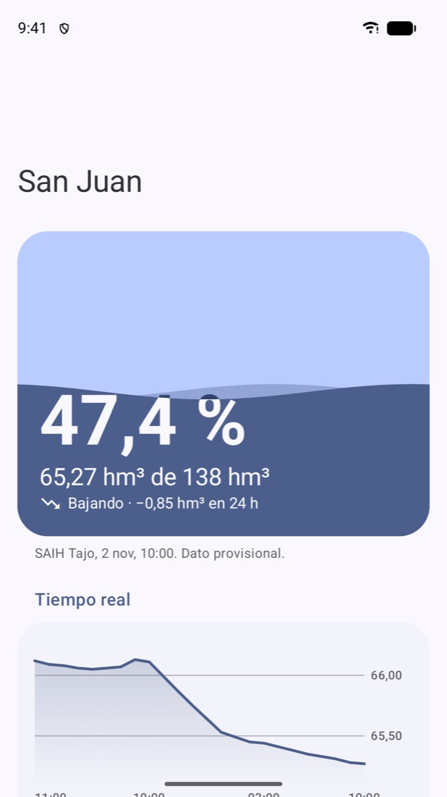

01
Ahora
El embalse, de un vistazo
Porcentaje, volumen, cota y nivel, con la tendencia de las últimas 24 horas. Se actualiza cada hora con el SAIH Tajo.
Río Alberche · Madrid
El nivel del embalse, ahora mismo. En tu iPhone, en tu muñeca y en tu pantalla de inicio.

Los datos oficiales del embalse están repartidos en webs técnicas.
Esta app los junta en una sola pantalla, clara y rápida,
con la fuente y la fecha de cada cifra.



Ahora
Porcentaje, volumen, cota y nivel, con la tendencia de las últimas 24 horas. Se actualiza cada hora con el SAIH Tajo.
Boletín semanal
El dato semanal de MITECO, comparado con la misma semana del año pasado y con la media de 10 años.
Río Alberche
Burguillo, San Juan y Picadas, de arriba abajo. Con el caudal que sale al río, el trasvase y la lluvia en la cuenca.
Histórico
Cada semana desde hace casi 40 años, con el mínimo de 2005 y el máximo de 1988. La sequía y la recuperación, con perspectiva.
de capacidad
de superficie
año de la presa
lecturas al día
En todas partes
Nativa en cada plataforma, con los componentes del sistema, modo oscuro y texto grande.
Abierto, dos columnas, con el pliegue justo en el hueco.

App y complicaciones. Funciona sin el iPhone cerca.

Todo el embalse en dos columnas de tarjetas.

Material You, con los colores de tu fondo de pantalla.

Datos oficiales
Boletín Hidrológico de MITECO.
Confederación Hidrográfica del Tajo. Cada hora: volumen, cota, caudales, tiempo en la presa y lluvia.
Ministerio para la Transición Ecológica. Cada semana: agua embalsada y la serie completa desde 1988.
Las dos fuentes miden distinto. La app nunca las combina: cada número lleva su fuente y su fecha.
Privacidad
cuentas
anuncios
rastreadores
Gratis y completa. Si te es útil, puedes dejar una propina en iPhone y iPad.